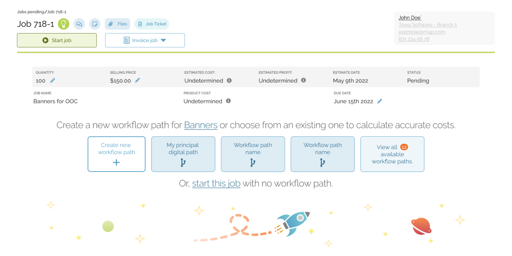
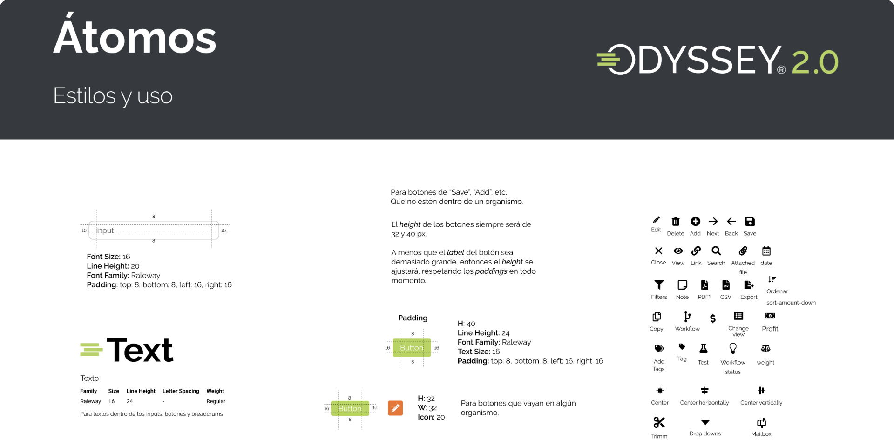
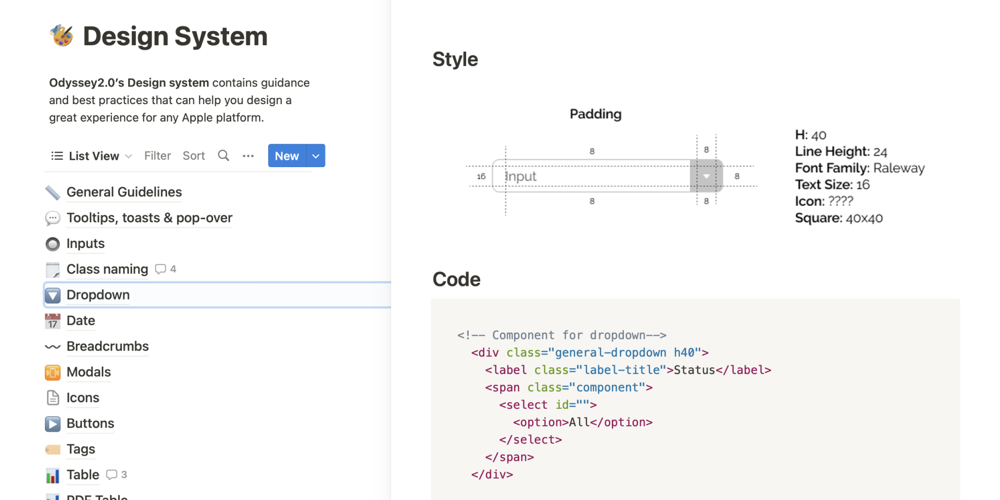

Odyssey, a management information system tailored for the print industry, caters to American and Canadian markets, providing essential services and solutions. Streamlining operations and enhancing efficiency, Odyssey stands as a pivotal tool for businesses seeking effective management in the dynamic and competitive printing sector.
My contributions encompassed three core aspects: first, crafting a comprehensive User Interface kit to bolster the digital brand; second, developing an integrated design system merging code components; and finally, serving as a User Interface designer. This multifaceted role ensured a cohesive digital identity, efficient development processes, and user-centric designs, harmonizing aesthetics with functionality.

In collaboration with three designers, I spearheaded the creation of a comprehensive User Interface kit. This initiative involved formulating a meticulous visual guide delineating rules for each website component. Our concerted efforts successfully addressed critical client concerns, including screen standardization and the eradication of inconsistencies. The resultant kit harmonized design elements, ensuring a polished and unified digital presence.
The kit's implementation has notably accelerated mockup creation, streamlining our workflow. Moreover, its success has set a strong precedent for our upcoming ambitious endeavor: the design system. This pivotal resource not only enhances efficiency but also serves as a cornerstone for our strategic approach, fostering cohesion and innovation in our future projects.

As the User Interface lead, I spearheaded the design system, overseeing a compact team comprising three designers and two front-end developers. This strategic move was prompted by the project's swift expansion, aiming to proactively ensure scalability and a seamless onboarding process for incoming members. By orchestrating this initiative, we fortified our capacity to accommodate growth while maintaining excellence.
The design system seamlessly integrated the guidelines from the user interface kit, enriched by embedding HTML and CSS code for the respective classes. Comprising a menu of items, each selection unveiled a thumbnail, interaction guidelines, and corresponding class code. This comprehensive resource not only embodied design principles but also facilitated efficient implementation, fostering consistency and precision throughout the project.

Upon achieving a substantial milestone, we presented the completed system to both the client and the entire team. This achievement has since transformed into an official identity document, imparted to every new entrant joining the company. As a tangible emblem of our design philosophy and collaborative spirit, the system continues to shape our projects and welcome new members.
The project remains an ongoing endeavor, with both the user interface kit and the design system continuing to play integral roles. These enduring resources stand as cornerstones of our design approach, underpinning the project's evolution and serving as invaluable tools for ensuring consistency, efficiency, and innovation.
Get in touch!
Instagram
LinkedIn
Behance